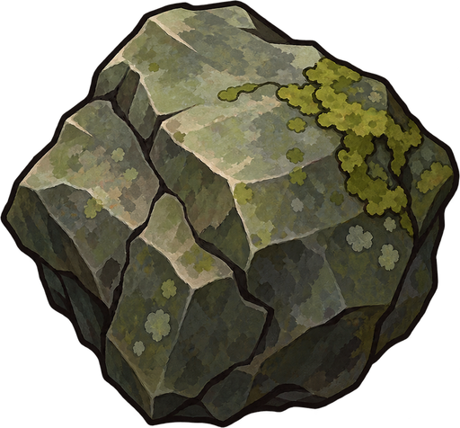
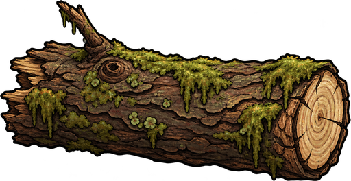
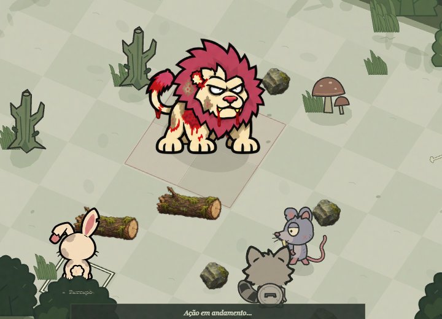

← Jogar Bichos do BrejoO brejo também bate.
Pedras e troncos agora participam do combate. Use Interagir / B: cada aliado tem um bônus por turno, separado de movimento, ataque e mana.

Pedra · 4 de dano · alcance 3
Tronco · 8 de dano · até 4 casasTronco em combate
Fique numa casa adjacente ao tronco. A trajetória segue para o lado oposto ao seu bicho. Confirme na área dourada ou no botão Empurrar. O tronco para antes de terreno bloqueado, aliados e outros troncos; atinge cada inimigo uma vez.

1 / 15
Capturas do jogo real, com avanço quadro a quadro. Os objetos são sprites PNG completos que se deslocam na cena. Cada objeto do chão pode ser usado uma vez por combate.
Graxinin · recolher e arremessar
Começa com uma lata na mão. O ataque Arremessar objeto causa 8 de dano, tem alcance 4 e consome o objeto carregado. Depois, use o bônus para recolher uma pedra adjacente. Pode guardar uma pedra entre turnos; continua precisando de um ataque disponível para arremessá-la.
Experimentar contra Rosnaldo → · Prompts da arte